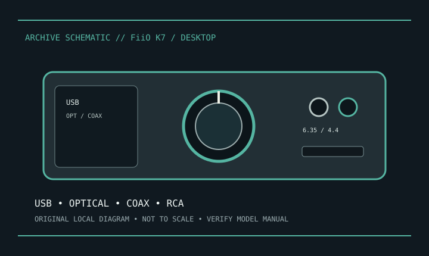

[ INDIVIDUAL COMPONENT // SOUND HARDWARE ]
FiiO K7 (non-Bluetooth)
Original FiiO K7 is a desktop DAC/headphone amp. Excludes K7 BT, which adds Bluetooth and app-specific functions.

Model-specific specifications
| Product/variant | FiiO K7, non-Bluetooth; verify label and distinguish K7 BT. |
|---|---|
| Digital inputs | USB, optical S/PDIF and coaxial S/PDIF, with front-panel input selection. |
| Analog | 6.35 mm single-ended and 4.4 mm balanced headphone outputs; RCA line outputs. Do not use headphone jacks as line outputs. |
| Conversion/amplification | FiiO specifies dual AK4493SEQ DACs and THX AAA 788+ amplification; USB playback supports up to 32-bit/384 kHz PCM and DSD256. Check optical/coax input limits separately. |
| Power | External DC supply, not USB bus-powered; use supply meeting FiiO voltage/polarity rating. |
| Software | Use FiiO driver/support listing for original K7. Optical/coaxial inputs do not require USB host driver. |
Compatibility & preservation
Keep approved DC supply with device; check polarity/rating before replacement. Label balanced cable wiring and selected digital input; retain the non-BT model’s driver package.
- Photograph the model/revision label, connector panel, and installed/bundled accessories before service.
- Retain manufacturer manuals, original driver/firmware packages, and known-working configuration notes with the hardware.
- Use the specified signal level, connector wiring, and power requirements; connector fit alone does not prove compatibility.
Manufacturer sources
- FiiO — K7Manufacturer product specifications for original non-BT model.
- FiiO — supportManufacturer manuals and downloads; select K7, not K7 BT.